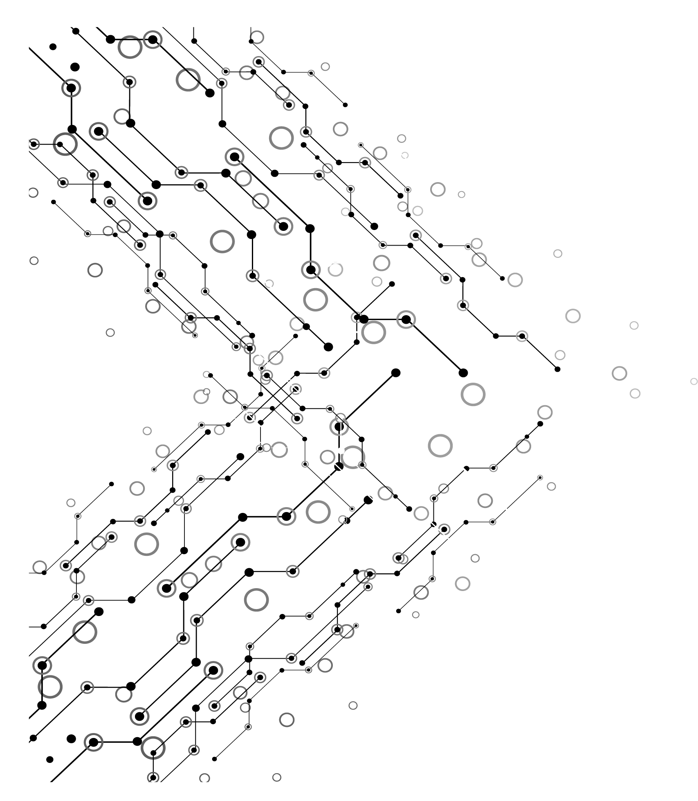

<div class="content">
    <!-- <h2>Posted News</h2> -->
    <button class="btn btn-primary" *ngIf="canCreateNewsPosts" (click)="createNewsPost()">
        Post some News!
    </button>

    <br>
    <mat-progress-spinner *ngIf="loading" mode="indeterminate"></mat-progress-spinner>

    <div *ngIf="newsPosts">
        <div *ngFor="let newsPost of newsPosts" class="article-container" >
            <div [routerLink]="['/news-post/',newsPost.id,newsPost.normalizedName]">
                <div class="left-article-img">
                    
                </div>
                <div class="right-article-data">
                    <div class="article-info">
                        <h3>{{newsPost.postName}}</h3>
                        <h3>Published on {{newsPost.datePublished | date:'medium'}}</h3>
                        <h3 *ngIf="newsPost.lastUpdate">Last Updated on {{newsPost.lastUpdate | date:'medium'}}</h3>
                        <p class="article-author">Written by <span class="author-name">{{newsPost.authorUserName}}</span></p>
                    </div>
                    <div class="description">
                        {{newsPost.description}}
                    </div>
                </div>
            </div>
        </div>
    </div>

    <div class="not-found-section" *ngIf="noNewsPosts && !loading">
        <app-not-found-page></app-not-found-page>
    </div>
</div>